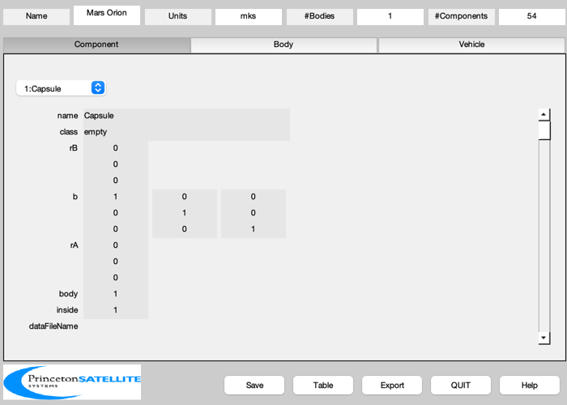
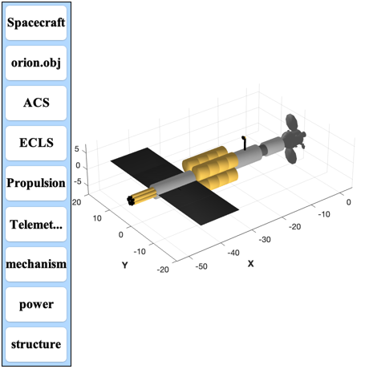

Direct Fusion Drive (DFD) Mars Mission using an Orion capsule.
You can change parameters to resize the vehicle. This designs a fusion propelled spacecraft to take an Orion capsule to Mars. Sizes the mission and builds a model of the propulsion stage. If requested loads the Orion spacecraft as a subassembly from Orion.mat
------------------------------------------------------------------------- See also BuildCADModel, CreateBody, CreateComponent, ExportCAD, ExportOBJ, LoadCAD, AntennaPatch, VEscape, UE, VOrbit, Constant, CreateLatexTable, Truss, RocketMass -------------------------------------------------------------------------
Contents
%-------------------------------------------------------------------------- % Copyright (c) 2013-2014 Princeton Satellite Systems, Inc. % All Rights Reserved. %-------------------------------------------------------------------------- % Since version 2014.1 %--------------------------------------------------------------------------
Controls
%----------
addOrion = 1;
exportCAD = 0;
makeCADModel = 1;
Constants
%----------- radiusMars = Constant('equatorial radius mars'); radiusEarth = Constant('equatorial radius earth'); muSun = Constant('mu sun'); muMars = Constant('mu mars'); g = 9.806; % m/s^2 aU = Constant('au' ); aEarth = aU; aMars = 1.5*aU;
Inputs
%--------
dVTransfer = 59.78;
thrust = [302.4 352.6 406.7 302.7];
dV = [7.41 12.51 17.93 12.47];
earthOrbitAltitude = 400;
marsOrbitAltitude = 400;
Spacecraft parameters
%----------------------- % Fusion engines %---------------- rEngine = 0.55; lEngine = 12*rEngine; lNozzle = 0.8; nEngines = 5; % http://www.nasaspaceflight.com/2012/04/delving-deeper-dsh-configurations-support-craft/ %---------------------------------------------------------------------------------------- massHab = 39884; % DSH Configuraton (kg) specPower = 1;%0.75;% 0.48; % kW/kg powerPerEngine = 6e6; power = nEngines*powerPerEngine; eta = 0.58; fS = 0.03; % kg/kg fuel tank/fuel % Radiator %--------- radiatorArealMass = 2.75; tempRadiator = 625; tRadiator = 0.1; massTruss = 20; lengthTruss = 3; % Fuel tanks %----------- nTank = 4; lTank = 10; fInsulation = 1.2; % Insulation thickness is 20% of tank densityD = 162.4; % kg/m^3 nTankPerRow = 4; tankSpacing = lTank/100; massHe3 = 1.434928508299958;%kg densityHe3 = 0.1785;%kg/m^3 volHe3 = massHe3/densityHe3;%m^3 % Cylindrical transition structure %=-------------------------------- lCylTrans = 12; rCylTrans = 2; massCylTrans = 200; % Orion to engine transition structure %------------------------------------- rUOrionTrans = 2; rLOrionTrans = 3; lOrionTrans = 2; massOrionTrans = 20;
Orbit calculations
%-------------------- earthOrbit = earthOrbitAltitude + radiusEarth; % km marsOrbit = marsOrbitAltitude + radiusMars; % km dVMars = VEscape( marsOrbit, muMars ) - VOrbit(marsOrbit,marsOrbit,muMars); dVEarth = VEscape( earthOrbit ) - VOrbit(earthOrbit,earthOrbit); % Total delta-v %-------------- dV = dV + [dVEarth dVMars dVMars dVEarth];
Mass calculations
%------------------- massFuel = zeros(1,4); massTotalSeg = zeros(1,5); massTank = zeros(1,4); massEngine = power/(1000*specPower); massTotalSeg(5) = massEngine + massHab;% + massOrion for k = 4:-1:1 uE(k) = 2*power*eta/thrust(k); [massFuel(k), massTotalSeg(k), massTank(k)] = RocketMass( uE(k)/g,massTotalSeg(k+1), fS, dV(k) ); end volFuel = massFuel/densityD; clear s k = 1; s{k,1} = '$\Delta V$ Mars Escape'; s{k,2} = sprintf('%4.2f',dVMars); s{k,3} = 'km/s'; k = k + 1; s{k,1} = '$\Delta V$ Earth Escape'; s{k,2} = sprintf('%4.2f',dVEarth); s{k,3} = 'km/s'; k = k + 1; s{k,1} = '$\Delta V$ Round Trip'; s{k,2} = sprintf('%4.2f',dV ); s{k,3} = 'km/s'; k = k + 1; s{k,1} = 'Mass Habitat'; s{k,2} = sprintf('%6.1f',massHab); s{k,3} = 'kg'; k = k + 1; s{k,1} = 'Mass Engine'; s{k,2} = sprintf('%6.1f',massEngine); s{k,3} = 'kg'; k = k + 1; s{k,1} = 'Mass Fuel'; s{k,2} = sprintf('%6.1f',sum(massFuel)); s{k,3} = 'kg'; k = k + 1; s{k,1} = 'Mass Tankage'; s{k,2} = sprintf('%6.1f',sum(massTank)); s{k,3} = 'kg'; k = k + 1; s{k,1} = 'Mass Total'; s{k,2} = sprintf('%6.1f',massTotalSeg(1)); s{k,3} = 'kg'; k = k + 1; s{k,1} = 'Volume Fuel'; s{k,2} = sprintf('%6.1f',volFuel); s{k,3} = 'm^3'; k = k + 1; s{k,1} = 'Thrust'; s{k,2} = sprintf('%6.1f',thrust); s{k,3} = 'N'; k = k + 1; s{k,1} = 'Exhaust Velocity'; s{k,2} = sprintf('%7.2f',uE/1000); s{k,3} = 'km/s'; k = k + 1; s{k,1} = 'Engine efficiency'; s{k,2} = sprintf('%4.3f',eta); s{k,3} = ''; k = k + 1; s{k,1} = 'Specific power'; s{k,2} = sprintf('%4.3f',specPower); s{k,3} = 'kW/kg'; k = k + 1; CreateLatexTable( s, 1 ) % If you don't want a CAD model, return %-------------------------------------- if( makeCADModel == 0 ) return end % Build the CAD model %-------------------- BuildCADModel( 'initialize' ); BuildCADModel( 'set name' , 'Mars Orion' ); BuildCADModel( 'set units', 'mks' ); m = CreateBody( 'make', 'name', 'Core' ); BuildCADModel('add body', m ); BuildCADModel( 'compute paths' ); if( addOrion ) BuildCADModel( 'add subassembly', 'Orion', 1, [0;0;0], [-1 0 0;0 1 0; 0 0 1] ); end
$\Delta V$ Mars Escape & 1.39 & km/s \\ \hline $\Delta V$ Earth Escape & 3.18 & km/s \\ \hline $\Delta V$ Round Trip & 10.5913.9019.3215.65 & km/s \\ \hline Mass Habitat & 39884.0 & kg \\ \hline Mass Engine & 30000.0 & kg \\ \hline Mass Fuel & 57541.8 & kg \\ \hline Mass Tankage & 1726.3 & kg \\ \hline Mass Total & 129152.1 & kg \\ \hline Volume Fuel & 69.9 95.0 126.4 63.0 & m^3 \\ \hline Thrust & 302.4 352.6 406.7 302.7 & N \\ \hline Exhaust Velocity & 115.08 98.70 85.57 114.97 0.00 0.00 0.00 0.00 0.00 0.00 0.00 0.00 0.00 0.00 0.00 0.00 0.00 0.00 0.00 0.00 0.00 0.00 0.00 0.00 0.00 0.00 65.26 72.45 78.19 83.27 87.97 92.40 96.63 100.61 104.45 108.25 111.86 115.37 118.92 122.26 125.52 128.72 131.85 134.93 137.95 141.09 143.99 146.84 149.65 152.41 155.13 157.81 160.44 163.04 165.60 168.12 170.60 173.05 175.47 177.85 180.48 182.79 185.06 187.31 189.53 191.72 193.88 196.01 198.12 200.20 202.26 204.29 206.30 208.28 210.24 212.17 214.09 215.98 217.85 219.69 221.52 223.32 225.11 226.87 228.62 230.34 232.05 233.74 235.41 237.06 238.69 240.31 241.91 243.49 245.05 246.60 248.14 249.65 251.16 252.64 & km/s \\ \hline Engine efficiency & 0.580 & \\ \hline Specific power & 1.000 & kW/kg \\ \hline
Add the habitat module
%------------------------ rHab1 = 2; rHab2 = 1.5;%125; rHab3 = 2.25; lHab1 = 5.5; lHab2 = 2.5; lHab3 = 10; bHab = [0 0 1;0 1 0;-1 0 0]; xHab1 = -4.2 - lHab1; rAHab1 = [xHab1;0;0]; massHab1=16077.27; nameHab1 = sprintf('Habitat Module Part 1%d',k); m = CreateComponent( 'make', 'cylinder', 'rUpper', rHab1, 'rLower', rHab1, 'h', lHab1, 'n', 20, 'b', bHab, ... 'faceColor', 'aluminum','inside',0, 'rA', rAHab1, 'mass', massHab1, 'name', nameHab1, 'body', 1 ); BuildCADModel( 'add component', m ); xHab2 = -4.2 - lHab1 - lHab2; rAHab2 = [xHab2;0;0]; massHab2=1545.89; nameHab2 = sprintf('Habitat Module Part 2%d',k); m = CreateComponent( 'make', 'cylinder', 'rUpper', rHab2, 'rLower', rHab2, 'h', lHab2, 'n', 20, 'b', bHab, ... 'faceColor', 'steel','inside',0, 'rA', rAHab2, 'mass', massHab2, 'name', nameHab2, 'body', 1 ); BuildCADModel( 'add component', m ); xHab3 = -4.2 - lHab1 - lHab2 - lHab3; rAHab3 = [xHab3;0;0]; massHab3=22260.84; nameHab3 = sprintf('Habitat Module Part 3%d',k); m = CreateComponent( 'make', 'cylinder', 'rUpper', rHab3, 'rLower', rHab3, 'h', lHab3, 'n', 20, 'b', bHab, ... 'faceColor', 'aluminum','inside',0, 'rA', rAHab3, 'mass', massHab3, 'name', nameHab3, 'body', 1 ); BuildCADModel( 'add component', m ); lHab = lHab1+lHab2+lHab3; % Add the fuel tanks %------------------- rTank = sqrt(sum(volFuel)/nTank/lTank/pi); % Add insulation %--------------- rTank = fInsulation*rTank; lTank = fInsulation*lTank; massTank = (1+fS)*sum(massFuel)/(nTank*nTankPerRow); ang = pi/4; b = [0 0 1;0 1 0;-1 0 0]; lT = lTank/nTankPerRow; xTank = -4.2 - lHab - lTank; for j = 1:nTankPerRow for k = 1:nTank y = 1.5*rTank*cos(ang); z = 1.5*rTank*sin(ang); ang = ang + pi/2; rA = [xTank;y;z]; name = sprintf('Fuel Tank %d',k); m = CreateComponent( 'make', 'cylinder', 'rUpper', rTank, 'rLower', rTank, 'h', lT, 'n', 20, 'b', b, ... 'faceColor', 'gold foil','inside',0, 'rA', rA, 'mass', massTank, 'name', name, 'body', 1 ); BuildCADModel( 'add component', m ); end xTank = xTank + lT + tankSpacing; end xTank = -4.2 - lHab - lTank; xTrans = xTank - lCylTrans; m = CreateComponent( 'make', 'cylinder', 'rUpper', rCylTrans, 'rLower', rCylTrans, 'h', lCylTrans, 'n', 20, 'b', b, ... 'faceColor', 'aluminum','inside',0, 'rA', [xTrans;0;0], 'mass', massCylTrans, 'name', 'Transition', 'body', 1 ); BuildCADModel( 'add component', m ); % Add He3 Tank %------------- rHTank = rTank*((1/cos(pi/4))-1)-0.1; lHTank = volHe3/(pi*((rHTank/fInsulation)^2)); lHTank = lHTank*fInsulation; bH = [0 0 1;0 1 0;-1 0 0]; xHTank = -4.2 - lHab - lHTank; rAH = [xHTank;0;0]; massTankH=1; nameH = sprintf('He3 Fuel Tank %d',k); m = CreateComponent( 'make', 'cylinder', 'rUpper', rHTank, 'rLower', rHTank, 'h', lHTank, 'n', 20, 'b', bH, ... 'faceColor', 'gold foil','inside',0, 'rA', rAH, 'mass', massTankH, 'name', nameH, 'body', 1 ); BuildCADModel( 'add component', m ); % Add Engines %------------ ang = 0; massEngine = massEngine/nEngines; massNozzle = 0.05*massEngine; massEngine = 0.95*massEngine; xEngine = xTrans - lEngine; xNozzle = xEngine - lNozzle; for k = 1:nEngines y = 1.5*rEngine*cos(ang); z = 1.5*rEngine*sin(ang); ang = ang + 2*pi/nEngines; rA = [xEngine;y;z]; name = sprintf('Engine %d',k); m = CreateComponent( 'make', 'cylinder', 'rUpper', rEngine, 'rLower', rEngine, 'h', lEngine, 'n', 20, 'b', b, ... 'faceColor', 'gold foil','inside',0, 'rA', rA, 'mass', massEngine, 'name', name, 'body', 1 ); BuildCADModel( 'add component', m ); rA = [xNozzle;y;z]; name = sprintf('Magnetic Nozzle %d',k); m = CreateComponent( 'make', 'cylinder', 'rUpper', 0.5*rEngine, 'rLower', rEngine, 'h', lNozzle, 'n', 20, 'b', b, ... 'faceColor', 'black','inside',0, 'rA', rA, 'mass', massNozzle, 'name', name, 'body', 1 ); BuildCADModel( 'add component', m ); end % Add Radiators %-------------- heatRadiatedPerSide = (1-eta)*power/4; % for one radiator side sigma = 5.67e-8; area = heatRadiatedPerSide/(sigma*tempRadiator^4); xWidth = lCylTrans; yWidth = area/xWidth; massRadiator = radiatorArealMass*area; q = 1; for k = 1:2 name = sprintf('Radiator %d',k); rA = [xTrans + 0.5*lCylTrans;q*(rCylTrans+lengthTruss);0]; m = CreateComponent( 'make', 'box', 'x', xWidth, 'y', yWidth, 'z', tRadiator, ... 'faceColor', 'radiator','inside',0, 'rA', rA, 'mass', massRadiator, 'name', name, 'body', 1 ); BuildCADModel( 'add component', m ); name = sprintf('Radiator Truss %d',k); rA = [xTrans + 0.5*lCylTrans;q*rCylTrans;0]; m = CreateComponent( 'make', 'box', 'x', tRadiator, 'y', lengthTruss, 'z', tRadiator,'faceColor', 'black','inside',0, ... 'rA', rA, 'mass', massTruss, 'name', name, 'body', 1 ); BuildCADModel( 'add component', m ); q = -q; end % Antenna Assembly %----------------- rE = 1*0.61; rhoTruss = 409.7/4.55^2; mGimbal = 7.5; area = 203*144/39.37^2; mass = 53.5/2.205; rhoAreal = mass/area; rAntenna = 1; massAntenna = rhoAreal*pi*rAntenna^2; bA = [0 0 1;0 1 0;-1 0 0]; [v, f, l] = Truss( [0;0;0], [10*rE;0;0], 0.5*rE, 10 ); massTruss = rhoTruss*4.5*rE*rE*(0.5*rE)^2; lTruss = 15; m = CreateComponent( 'make', 'generic', 'vertex', v, 'face', f, 'edgeColor','truss', 'rA', [-(lTruss+2.4*rE);0;9.3*rE],... 'name', 'Antenna Truss', 'body', 1, 'b',bA, 'mass',massTruss,... 'faceColor', 'gold foil', 'inside', 0); BuildCADModel( 'add component', m ); m = CreateComponent( 'make', 'cylinder', 'rUpper', 0.25*rE, 'rLower',0.25*rE, 'h', 0.4*rE, 'n',12, 'rA', [-(lTruss+2.4*rE);0;9.3*rE],... 'name', 'Antenna Azimuth Gimbal', 'body', 1, 'mass', mGimbal/2, ... 'faceColor', 'gold foil', 'inside', 0); BuildCADModel( 'add component', m ); m = CreateComponent( 'make', 'cylinder', 'rUpper', 0.25*rE, 'rLower',0.25*rE, 'h', rE, 'n',12, 'rA', [-(lTruss+2.4*rE);-0.5*rE;10*rE],... 'name', 'Antenna Elevation Gimbal', 'body', 1, 'b',[1 0 0;0 0 1;0 -1 0], 'mass', mGimbal/2, ... 'faceColor', 'gold foil', 'inside', 0); BuildCADModel( 'add component', m ); [v, f] = AntennaPatch( rAntenna, rAntenna, 0.5, 0.2,[-1;0;0], [0;0;1], 20 ); m = CreateComponent( 'make', 'generic', 'vertex', v, 'face', f, 'edgeColor','truss',... 'name', 'Antenna', 'body', 1, 'faceColor', 'aluminum','inside', 0,'mass',massAntenna,... 'rA',[-(lTruss+2.7*rE);0;10*rE] ); BuildCADModel( 'add component', m ); % Add truss %---------- xBottom = [xTank;0;0]; xTop = [xTank+lTank;0;0]; [v, f] = Truss( xBottom, xTop, rTank, 8 ); c = cos(pi/4); v = ([1 0 0;0 c c;0 -c c]*v')'; m = CreateComponent( 'make', 'generic', 'vertex', v, 'face', f,'edgeColor', 'truss' ,'rA',[0;0;0],... 'name', 'Truss', 'body', 1, 'faceColor', [0.8 0.1 0.2],'inside', 1 ); BuildCADModel( 'add component', m );
Add subsystems
%---------------- BuildCADModel( 'add subsystem', 'ACS', {'star camera','rwa' 'torquer'} ); BuildCADModel( 'add subsystem', 'ECLS', {'habitat'} ); BuildCADModel( 'add subsystem', 'Propulsion', {'engine' 'fuel' 'radiator'} ); BuildCADModel( 'add subsystem', 'Telemetry and Command', {'antenna', 'board'} ); BuildCADModel( 'add subsystem', 'mechanism', {'drive'} ); BuildCADModel( 'add subsystem', 'power', {'solar array', 'battery'} ); BuildCADModel( 'add subsystem', 'structure', {'support', 'frame', 'strut', 'panel'} );
Update the mass properties to produce the tables
%-------------------------------------------------- BuildCADModel( 'update body mass properties' ); g = BuildCADModel( 'get model'); BuildCADModel('show vehicle')
Export
%-------- if( exportCAD ) CreateReport( g, 'tex', FileFullpath('DFDMarsMass'), 'mass', 1, 1, 1 ); if( addOrion ) ExportOBJ( g, FileFullpath('MarsOrion') ); else ExportOBJ( g, FileFullpath('MarsOrionPropulsion') ); end end %-------------------------------------- % $Id: d98a8613439a417ef61cf6e4eb803c94e1bf7da0 $